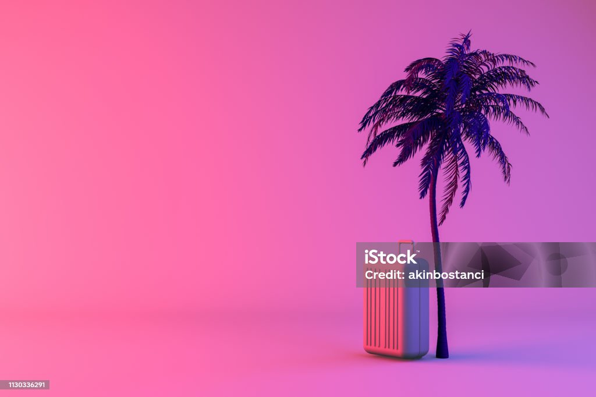

O que posso descartar?
Computadores, celulares, tablets, impressoras, cabos, baterias, carregadores, monitores, eletrodomésticos e outros eletrônicos.
 ReciclaTech
ReciclaTech
Confira os locais disponíveis para descarte de eletrônicos na região de São Paulo. Escolha o ponto mais próximo de você e contribua com a reciclagem consciente.
Endereço: Rua da Liberdade, 750 - Liberdade, São Paulo - SP
Horário: Seg a Sex: 08h às 18h | Sáb: 08h às 12h
Telefone: (11) 3333-1001
Itens aceitos: Computadores, celulares, tablets, cabos, carregadores, baterias
Endereço: Av. Domingos de Morais, 1520 - Vila Mariana, São Paulo - SP
Horário: Seg a Sex: 09h às 17h | Sáb: 09h às 13h
Telefone: (11) 3333-2002
Itens aceitos: Impressoras, monitores, notebooks, fontes, periféricos
Endereço: Rua dos Pinheiros, 312 - Pinheiros, São Paulo - SP
Horário: Seg a Sex: 08h às 18h
Telefone: (11) 3333-3003
Itens aceitos: Eletrodomésticos, cabos, placas, componentes eletrônicos
Endereço: Av. Santo Amaro, 4800 - Santo Amaro, São Paulo - SP
Horário: Seg a Sex: 07h às 17h | Sáb: 08h às 12h
Telefone: (11) 3333-4004
Itens aceitos: Todos os tipos de resíduos eletrônicos
Endereço: Rua Tuiuti, 1020 - Tatuapé, São Paulo - SP
Horário: Seg a Sex: 09h às 18h
Telefone: (11) 3333-5005
Itens aceitos: Celulares, tablets, baterias, carregadores, fones de ouvido
Endereço: Av. Braz Leme, 680 - Santana, São Paulo - SP
Horário: Seg a Sex: 08h às 17h | Sáb: 09h às 13h
Telefone: (11) 3333-6006
Itens aceitos: Computadores, impressoras, monitores, cabos, fontes
Computadores, celulares, tablets, impressoras, cabos, baterias, carregadores, monitores, eletrodomésticos e outros eletrônicos.
Não é necessário agendamento para descarte nos pontos de coleta. Basta comparecer no horário de funcionamento.
Não! O descarte nos pontos de coleta é totalmente gratuito.
Sim! Entre em contato pela página de Contato e agende a retirada.
Computadores, notebooks, monitores, teclados, mouses e periféricos.

Smartphones, tablets, carregadores, fones e acessórios.
Baterias, pilhas, cabos, fontes e adaptadores de energia.